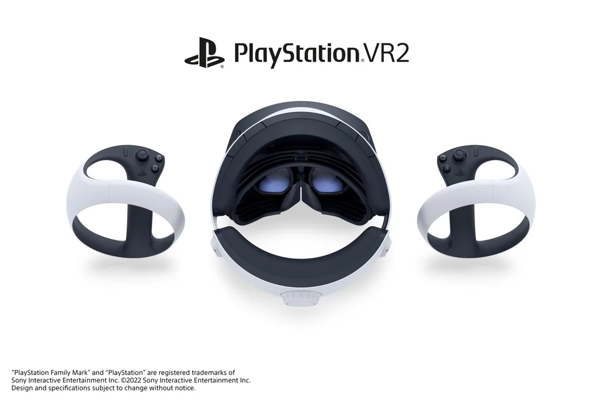

PSVR 2 | Noticia
Playstation reveló el diseño del PSVR 2
PlayStation finalmente mostró el diseño de su nuevo casco de realidad virtual, claramente inspirado en la estética de PlayStation 5.
El casco PlayStation VR 2 tiene una forma similar a la del control PSVR 2 Sense, ya que adopta una apariencia de “orbe”. La forma de orbe circular representa la vista de 360 grados que los jugadores sienten cuando entran al mundo de la realidad virtual, por lo que esta forma la captura de buena manera. El diseño del casco PS VR2 también se inspiró en la apariencia de la familia de productos de PlayStation 5. La consola PlayStation 5 tiene bordes planos, ya que está diseñada para ubicarse en una superficie plana; por otro lado, hubo mayor énfasis en darle una forma redondeada al diseño del casco de la PSVR 2, ya que está pensado para el uso constante, muy parecida a los bordes redondeados del control DualSense y los auriculares Pulse 3D.
"Nuestro objetivo es crear un auricular que no solo se convierta en una parte atractiva de la decoración de tu sala de estar, sino que también lo mantenga inmerso en su mundo de juego, hasta el punto en que casi se olvide de que está usando un auricular o un controlador. Es por eso que prestamos mucha atención a la ergonomía de los auriculares y realizamos pruebas exhaustivas para garantizar una sensación cómoda para una variedad de tamaños de cabeza", dice Hideaki Nishino, Vicepresidente Sénior, Administración y planificación de plataformas.
Para el casco PlayStation VR 2, se enfocó en la comodidad un poco más allá y se agregaron nuevas funciones, como un dial de ajuste del lente, de modo que los usuarios tengan una opción adicional para igualar la distancia de la lente entre sus ojos y optimizar la visión. También, se creó un diseño más delgado con una ligera reducción de peso, aun con las nuevas características adicionales, como el nuevo motor incorporado para la retroalimentación del casco.
Además, similar a los miles de símbolos pequeños de PlayStation agregados al diseño de la consola PlayStation 5 y al control DualSense, también se incorporó dichos símbolos en las bandas frontales y posteriores del casco PlayStation VR2 para brindar una sensación de comodidad a los jugadores. Cuando se lance PlayStation VR2, se dará un gran paso en la forma en que se juegan a los juegos de realidad virtual. Hay muchas funciones nuevas y emocionantes que esperar en el sistema PlayStation VR2, que incluyen una impresionante fidelidad visual en 4K HDR y un renderizado gráfico de vanguardia, capacidades de seguimiento mejoradas, como el seguimiento de cámara interno, nuevas funciones de la tecnología PlayStation VR2 Sense, como la retroalimentación del casco y el nuevo e intuitivo control PlayStation VR2 Sense que crea una sensación increíblemente profunda de inmersión. Además, el sistema PS VR2 viene con una configuración sencilla de un solo cable para que puedan conectarse a sus juegos inmediatamente.
Los kits de desarrollo de PSVR 2 ya están en manos de creadores de juegos y pronto habrá más novedades sobre la fecha de su lanzamiento para hacer de la realidad virtual una experiencia verdaderamente extraordinaria para los jugadores.